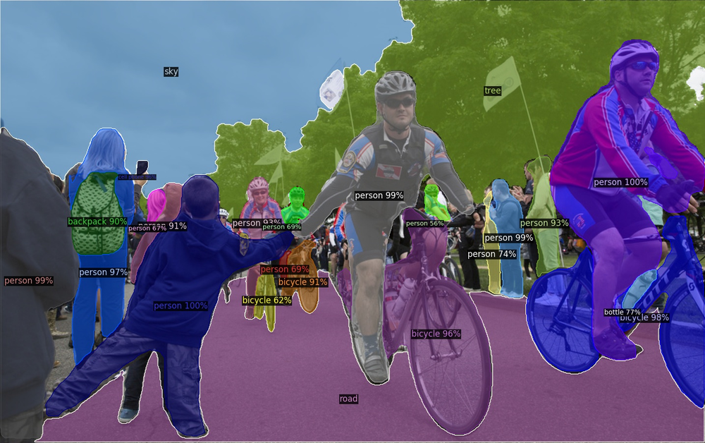

<a href="https://www.mdpi.com/2624-6120/3/2/22" class="fill-div nostyle">
    <div class="row mb-5 project-box pb-3">

        <div class="col-12">
            <h6 class="txt-primary mt-4">An Empirical Study on Ensemble of Segmentation Approaches</h6>
        </div>
        <div class="col-12 col-md-4">
            
        </div>
        <div class="col-12 col-md-8">
            <div class="row mb-3">
                <div class="col-12">
                    Empirical search of the best ensemble architecture to perform colorectal polyps segmentation.
                    Tested ensembles with different backbones, data augmentation methods and loss functions.
                    Personally, I implemented several loss functions to create ensembles with greater diversity.
                </div>
            </div>
            <div class="row">
                <div class="col-12">
                    <ul class="mt-2 d-flex flex-wrap no-style-list">
                        <li class="mt-2 mr-2">
                            <div class="txt-primary d-flex align-items-center skill-object px-3 py-1">Deep Learning</div>
                        </li>
                        <li class="mt-2 mr-2">
                            <div class="txt-primary d-flex align-items-center skill-object px-3 py-1">Semantic Segmentation</div>
                        </li>
                        <li class="mt-2 mr-2">
                            <div class="txt-primary d-flex align-items-center skill-object px-3 py-1">MATLAB for DeepLearning</div>
                        </li>
                    </ul>
                </div>
            </div>
        </div>
    </div>
</a>